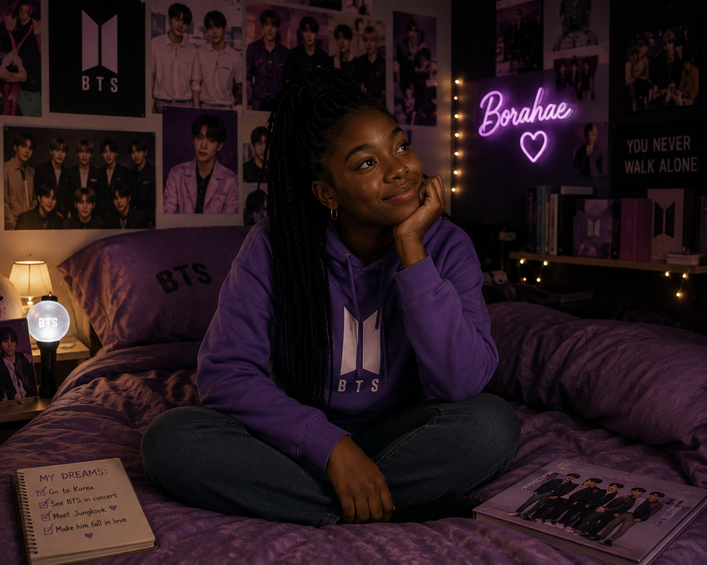
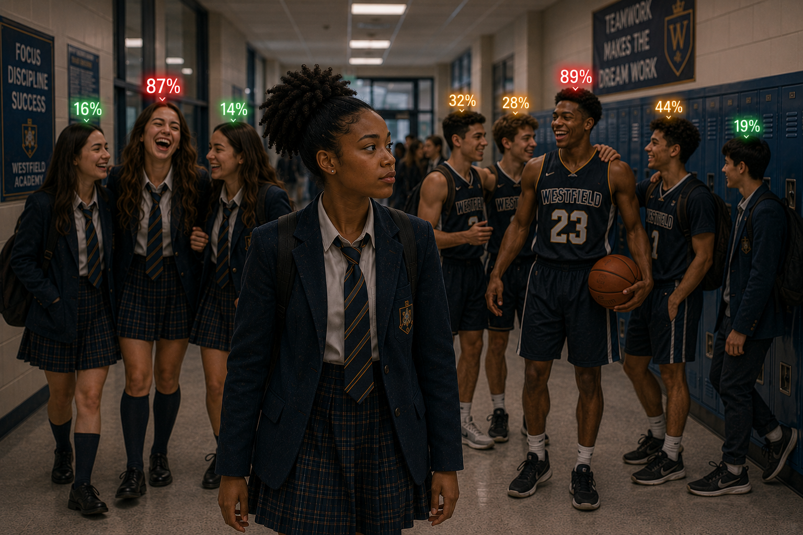
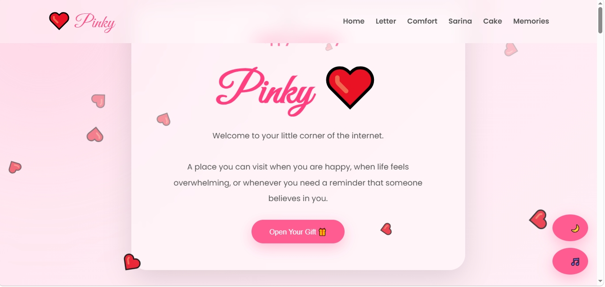
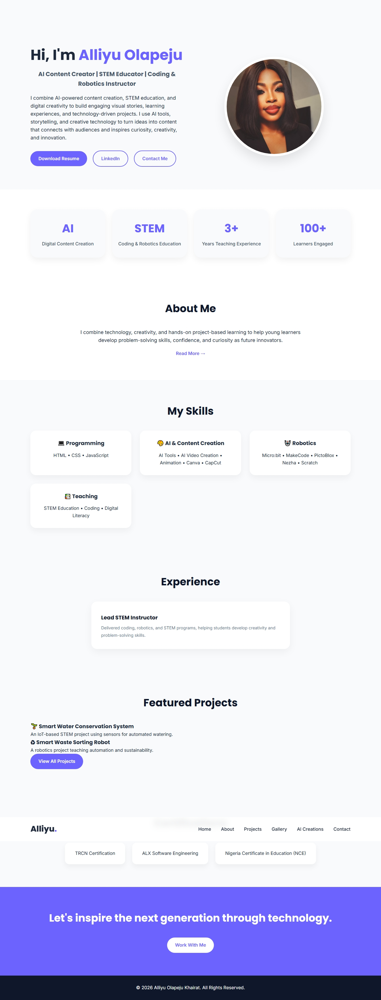
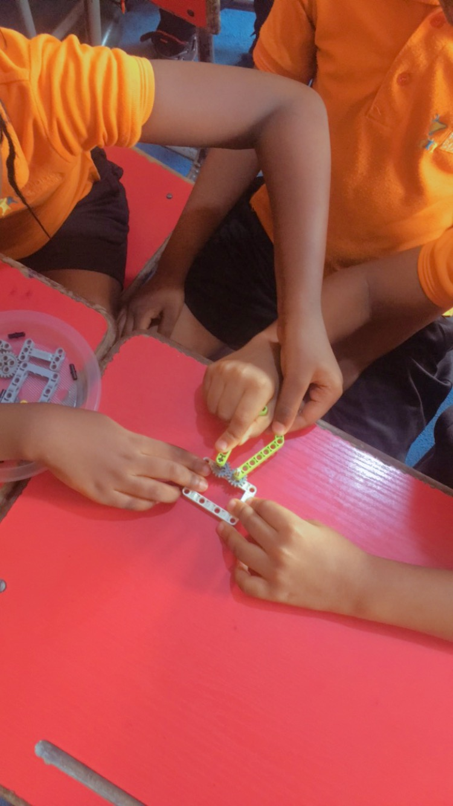
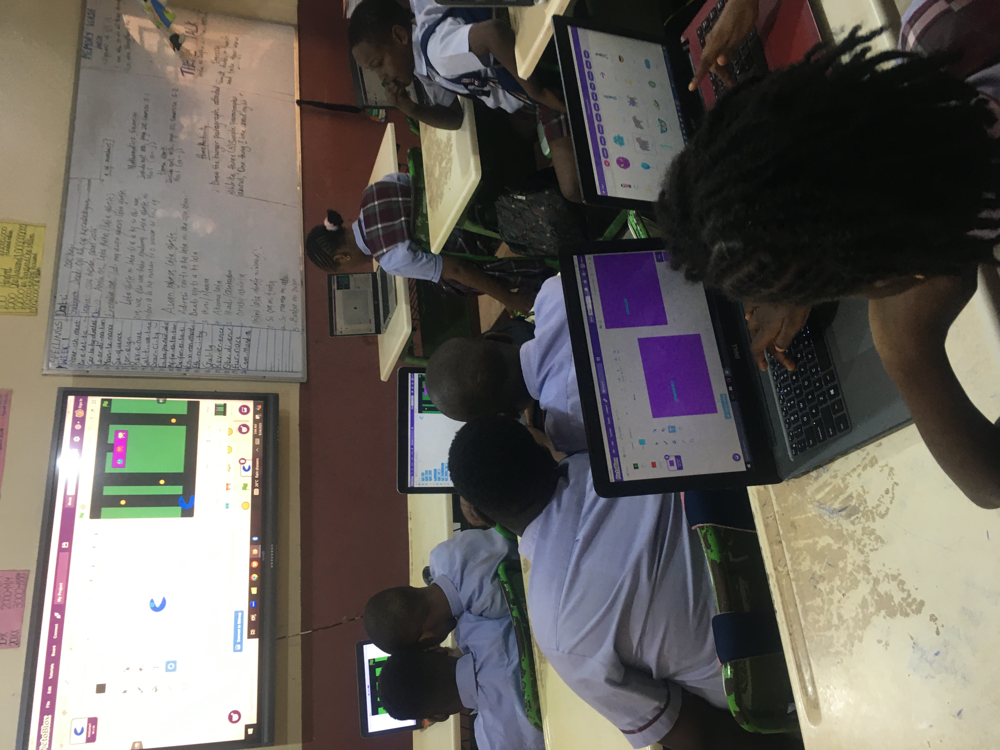
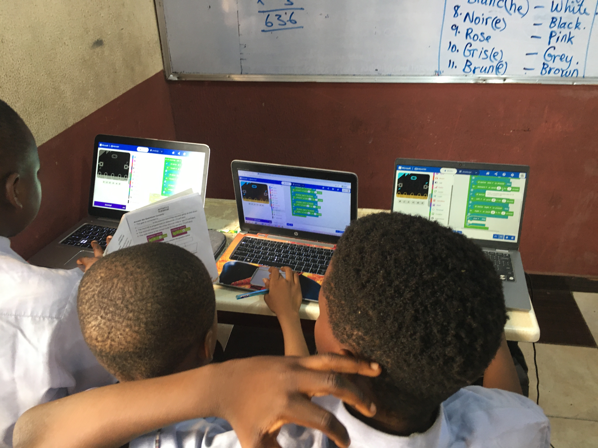

AI STORYTELLING
BTS Fan Girl
An AI-assisted visual story combining generated characters, cinematic scenes, narration, and video editing.
A collection of the things I've created, explored, designed, and brought to life through technology, storytelling, AI, and hands-on creativity.
I use AI and digital tools to turn ideas into characters, visuals, stories, and experiences designed to connect with an audience.



I enjoy creating digital experiences that combine thoughtful design, functionality, personality, and interactive elements.


My work with coding, robotics, and STEM gives me another way to turn technology into something practical, interactive, and exciting.



Whether I'm creating an AI story, building a website, or developing a STEM project, my process usually starts with curiosity and ends with something people can experience.
I start with an idea, question, story, or creative problem I want to explore.
I experiment with technology, AI, design, code, and digital tools to bring the idea to life.
I edit, test, improve, and shape the work until the final experience feels intentional.
I turn the finished idea into something people can watch, explore, interact with, or learn from.
See how I turn ideas into AI-powered stories, visuals, and digital content.
Explore AI Creations